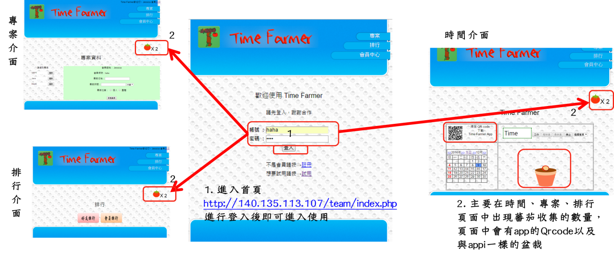
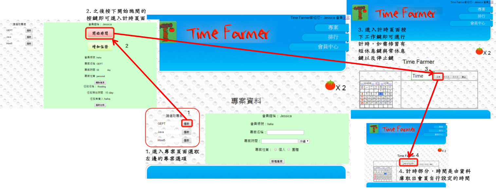
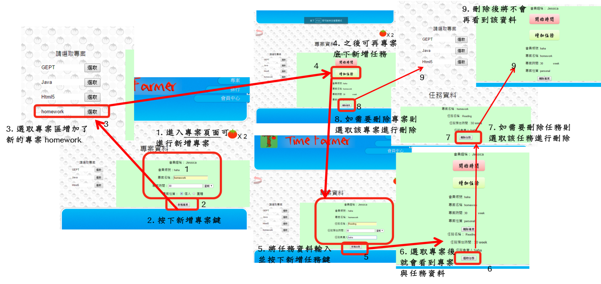
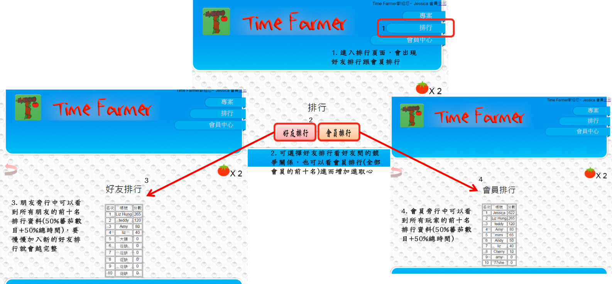
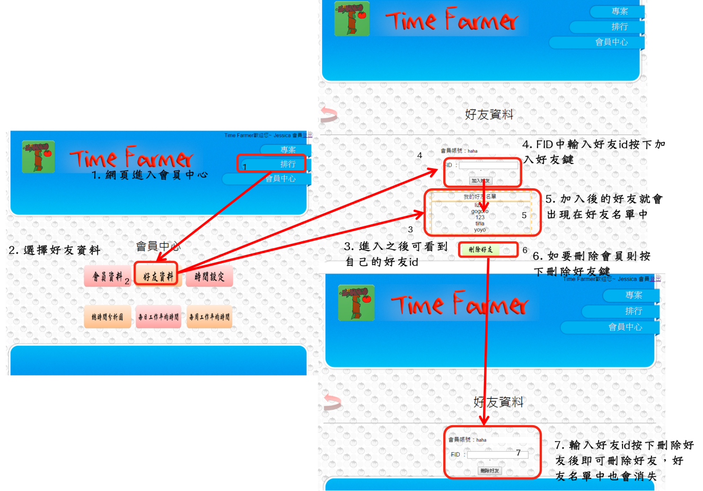
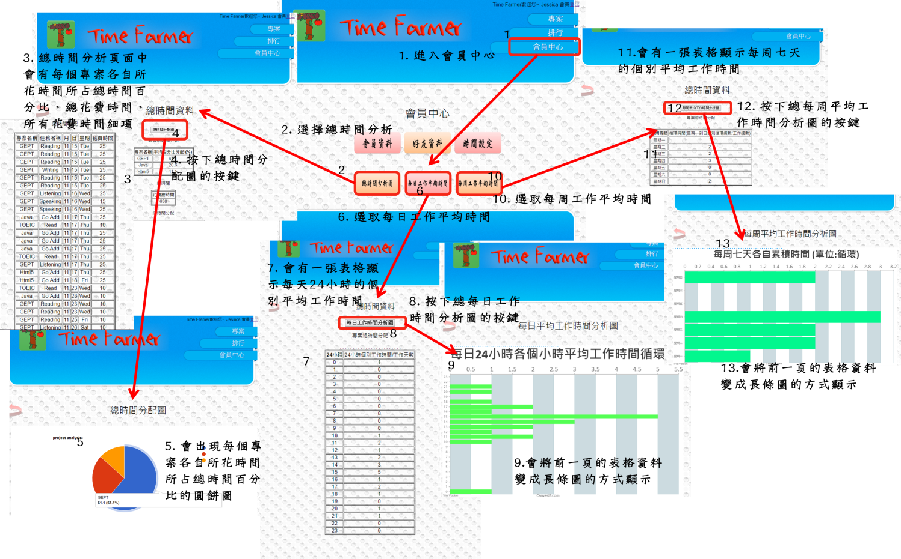

System.
系統功能
1) 時間管理 ：
使用者進入時間管理的功能中，會使用到時間提醒功能並進行基礎設定(一循環時間、短休息、長休息、幾循環可以長休息、提醒模式、是否鎖住螢幕)，當一切都設定好後，使用者可以進行時間運用，先選擇執行專案(個人/團隊)，就可進行時間計時了，記錄下的時間會累積在資料庫中做儲存。
2) 專案管理 ：
使用者進入專案管理介面後，可以開始新增自己要執行的專案，並選擇是個人專案或團體專案(填入專案名稱、專案負責人、專案預估時間、任務名稱、任務負責人、任務預估時間)，最後在每個專案的時間記錄會存到資料庫中再拿來進行時間分析使用，供使用者清楚的了解執行專案的時間規劃。
3) 蕃茄養成 ：
每位使用者都會擁有一個蕃茄養成介面，並得到一塊蕃茄田以及一顆種子，當時間累積後，每一小時蕃茄就會成長一階段，而成長主要分五階段，只要累積一小時就可以成長一階段，而經過五階段(累積5小時)後就可以獲得一顆蕃茄，而蕃茄會以數量來記錄到資料庫中做累積；而有成長就有死亡，當使用者因怠惰，而一天中都沒有使用時間記錄(主要因使用者的時間記錄會進行累計，並拿取時間來進行日常時間分析，而進而取得使用紀錄)的話就會使蕃茄樹枯萎。
4) 社群功能 ：
使用者可以運用帳號(ID)加入自己的好友，並進行團體專案，與好友互動進行有效的時間管理並在期限內完成專案。
5) 其他功能 ：
會員管理中可以讓使用者進行資料修改，主要是帳號、密碼、匿名這類基礎資料，這裡除了修改資料外還可以進行加好友的動作(運用帳號進行新增好友)。調整時間的基礎設定可以恢復原設定；並且可以從使用說明中理解基礎使用方法。
系統架構

系統呈現
1) APP ：
2) 網頁 ： (滑過放大圖示

試用展示

登入展示

專案計時展示

任務新增展示

排行展示

好友展示

時間分析展示